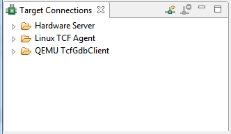

Target Connections
The Target Connections view allows you to configure multiple remote targets. It shows connected targets and gives you an option to add or delete target connections.
SDK establishes target connections through the Hardware Server agent. In order to connect to remote targets, the hardware server agent must be running on the remote host, which is connected to the target.
The target connection has been extended to all SDK utilities that deal with targets at runtime.
